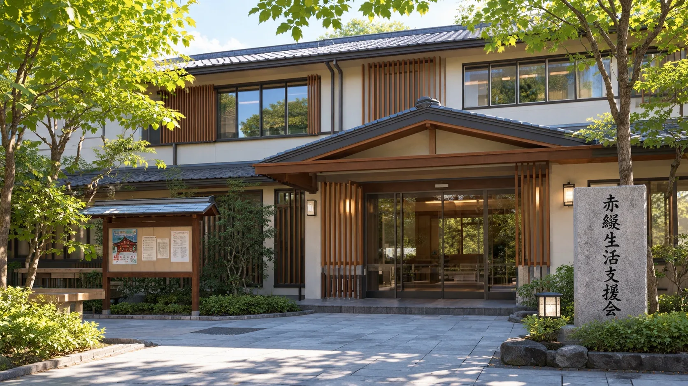
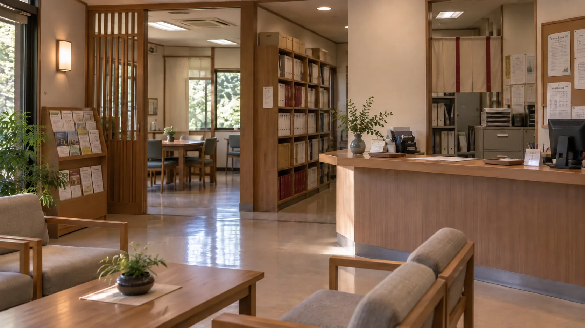
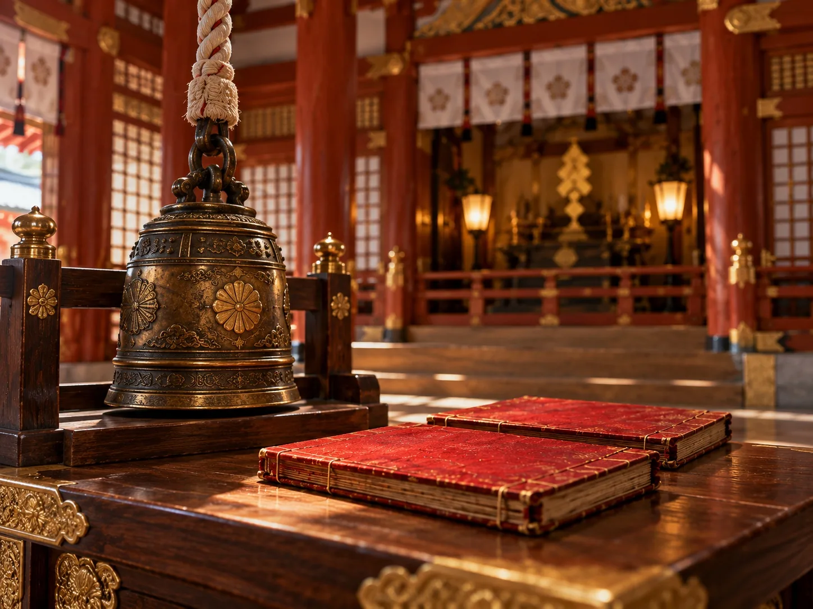
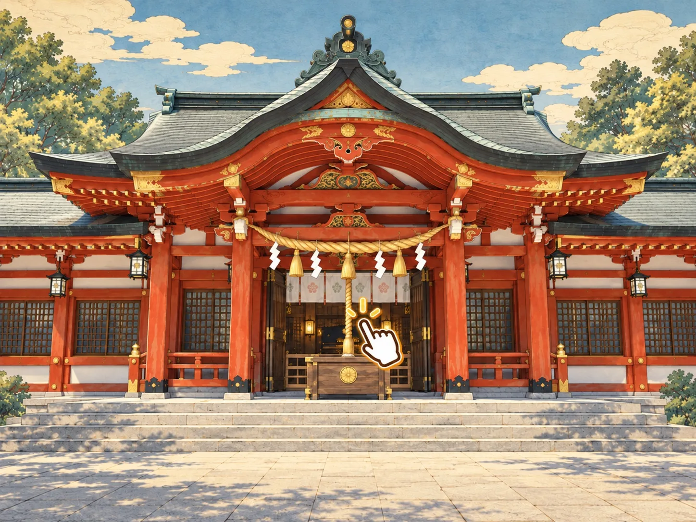

Integrated Confidential Record
Web参拝運用・事故報告統合記録
Section 01
受代ノ御影の性質
赤綴神社に本来祀られている受代ノ御影は、願いを無から叶える神ではありません。病気、災難、経済的な損失などを別の人間へ移すことで、願い主を救う存在でした。災いを移された人間が生み出す苦痛は、神の糧となります。
- 願い主の災い
- 赤綴帳に記録された契約
- 身代わりへ転嫁
- 願いの成就
身代わりが災いを引き受けられなくなると、残りは契約を管理する宮司へ戻る。
Section 02
特別祈願と指定身代わり制度
赤綴神社は数十年前から、富裕層に高額な特別祈願を提供していました。神社が運営する赤綴生活支援会は、一時宿泊や食事、生活相談、就労支援を実際に提供していました。しかし、支援会を利用した人々の一部は、本人に知らされないまま正式な身代わり候補として登録されていました。
2022年の特別奉納金の記録は、祈願依頼と身代わり選定の運用が並行していたことを示す。
- 特別祈願の依頼
- 奉納金の受領
- 候補者の選定
- 約3年の準備
- 赤綴帳の契約
- 災いの転嫁
- 成就確認


Section 03
制度停止と災いの還流
2023年、指定身代わり制度は運用を終了した。継続不能となった11名が負担していた災いのうち、一部は契約を管理する先代宮司へ還流し、先代宮司は2023年8月4日に死亡した。
未処理27件のすべてが解消されたわけではない。残余は宮司職の契約とともに現宮司へ継承され、再分配の対象となった。新たな正式身代わりには約3年の準備期間を要するため、従来制度による処理は間に合わない状態にあった。
- 指定身代わり制度2023年 運用停止
- 身代わり継続不能11名
- 未処理の災い27件
- 先代宮司への還流発生
- 先代宮司2023年8月4日 死亡
- 現宮司契約継承済／残された災いの再分配中
Section 04
Web参拝と厄分けの儀式
現在の宮司は、残された災いが自分に戻ることを恐れ、多くの人へ少しずつ災いを分ける「厄分けの儀式」を利用しました。より多くの参拝者を集めるため、遠方からも参加できるWeb参拝を導入したのです。参拝者がWeb画面の鈴を鳴らすと、神社内の祭祀用の鈴が連動して鳴り、その参拝が赤綴帳へ登録されます。
正式な身代わりの成立には約3年を要する。一方、Web参拝者は鈴鳴らしのみで一時的な候補として登録される。一人あたりに分けられる災いが小さいため、運用には多数の参拝者が必要となる。
- Web参拝の鈴をクリック
- 神社の祭祀用の鈴が鳴る
- 神との縁が成立
- 赤綴帳へ参拝番号登録
- 身代わり候補になる


Section 05
無承認転嫁の事故記録
多数のWeb参拝者が厄分けの儀式で神と結びつくと、受代ノ御影は宮司の個別の承認を必要とせず、参拝者が抱く願いを拾い、ほかの参拝者へ代償を分け始めました。神の力が無限に強くなったのではありません。災いを受ける候補者が増えたため、宮司を介さず願いを成立させられるようになったのです。
| 記録 | 願意 | 成就 | 転嫁記録 | 承認 |
|---|---|---|---|---|
| W-012 WEB-00128 | 病気平癒 | 長年の疾患が回復 | Web参拝登録者12名に関連する疾患・症状 | 宮司承認なし |
| W-026 WEB-00261 | 財産保全 | 多額の負債が解消 | Web参拝登録者23名に経済的損失 | なし |
| W-041 WEB-00319 | 仕事の成功 | 事業上の利益 | Web参拝登録者8名に失職・収入減少等 | なし |
同じ参拝者が繰り返し身代わりに選ばれる場合もあり、少しずつ分けられた災いが積み重なって深刻な被害につながっていました。現宮司は無差別な転嫁を把握していますが、Web参拝を止めると新しい候補者を集められず、未処理の災いが自分へ集中するため、運営を続けています。
Section 06 / Ending
Web参拝登録照合記録

- 記録番号
- 参拝方法
- Web参拝
- 儀式
- 厄分けの儀式
- 参拝操作
- 鈴鳴らし
- 登録状態
- 成立
- 身代わり候補
- 登録済
- 割当状態
- 待機中
- 次回の転嫁対象
- 未確定
次の身代わりは、まだ決まっていません。
現在もWeb参拝を受け付けています。